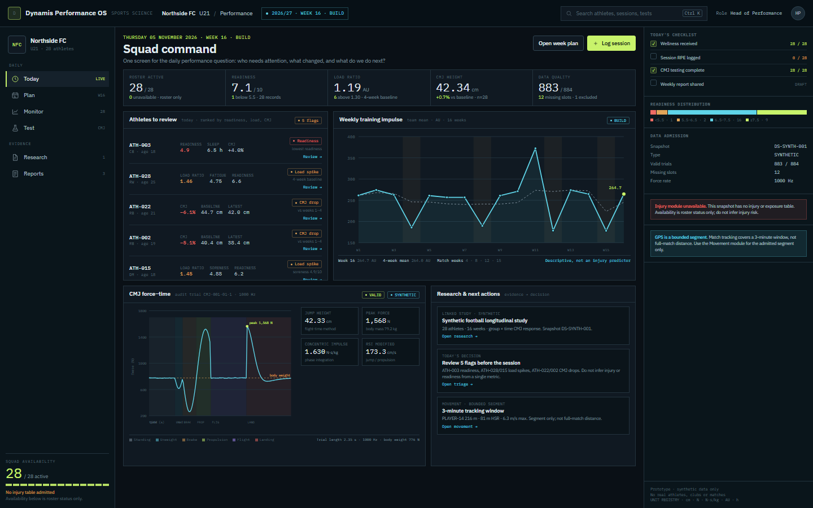
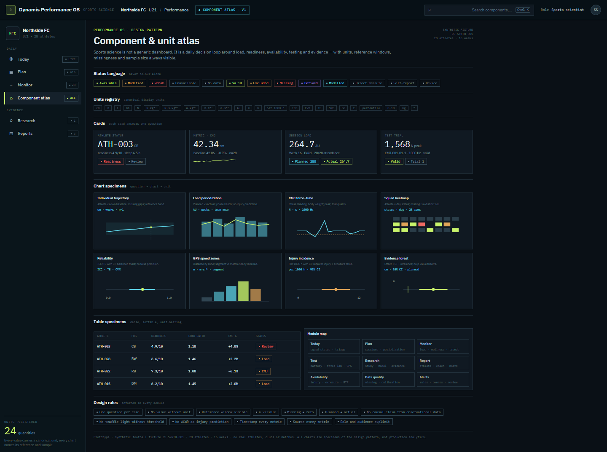

RES-588 · sports-science design pattern · synthetic fixture
Dynamis Performance OS
A sports-science-native operating pattern: Today, Plan, Monitor, Test, Research, Report. The dashboard answers the daily question — who needs attention, what changed, what do we do next — while the component atlas defines every unit, status, card, chart and empty state. Built on the repository’s synthetic football snapshot; no real athletes.

Today · Squad Command28 active, 5 flags, readiness 7.1/10, load ratio 1.19, CMJ 42.34 cm, 883/884 valid, 16-week load, CMJ force lab and honest data gaps.

System · Component & Unit AtlasStatus language, unit registry, cards, chart specimens, table specimens, module map and design rules.
Todaysquad command · triage · availability · data quality
Planmicrocycle · session builder · load targets · testing calendar
Monitorwellness · load · CMJ · GPS · athlete 360
Testbattery · force lab · sprint · strength · reliability
Researchquestion · cohort · plan · run · evidence · brief
Reportathlete · coach · medical · board · versioned export
Synthetic fixture DS-SYNTH-001 · 28 athletes · 16 weeks · no injury/exposure table admitted, shown as an explicit empty state. Prototype only; production UI untouched; RES-588 remains In Progress.